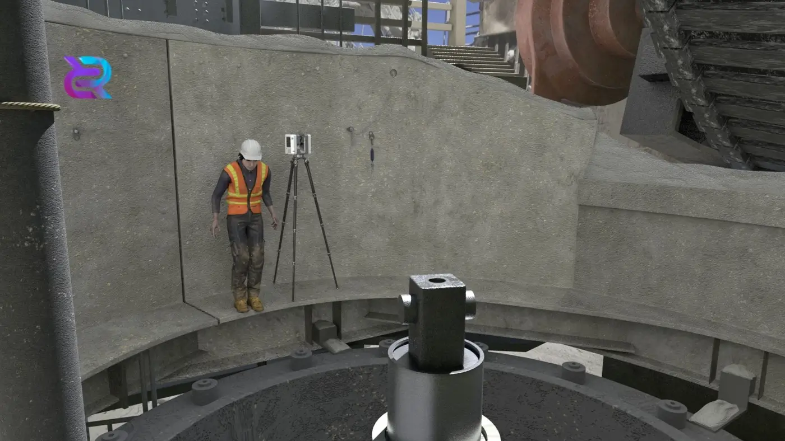
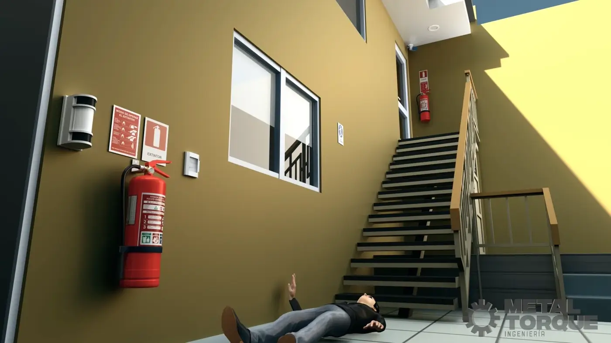

These models were created for use in an animation about safety in offices and mining work
sites.
Everything was created from scratch, including the settings, props, and characters.
Mudbox and 3D Maya were used for modeling. The textures were created and applied
using the Substance suite.
Post-production was done in Adobe Photoshop and Premiere.
The client allowed the use of some images for promotional purposes. Do not use,
all rights reserved.
Proper use of locks in an electrical room.
The overall atmosphere of the image is one of caution and safety in an industrial or
technical environment. The mood is serious and focused, emphasizing the importance
of following procedures when working with electrical equipment. The lighting is
uniform and without dramatic shadows, focusing on conveying the information about
the correct procedure for locking out an electrical panel.
Work carried out in
conjunction with the Risk Prevention staff to create the sequence
for the correct use of equipment and padlocking.

Risks in primary crushing
Sample images from a short animation, approximately 4 minutes long, showing the
consequences of not complying with mining safety regulations.
The first image
shows a worker performing an inspection on a primary crusher with the wrong
equipment and a reckless attitude.
The second image shows a worker performing an
inspection on a primary crusher with the correct equipment and in compliance with
current safety regulations.


Scene of an accident in an office.
This image shows the final result of a short animation depicting an accident in an office. The character falls down a staircase because he was running and not using the handrail. All props and scenery were created from scratch in Maya 3D. For this section of the video, two short animations were made, one of a simple stumble and this more dramatic and impactful scene.
